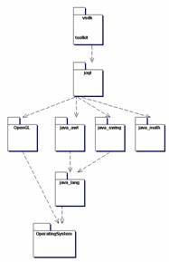
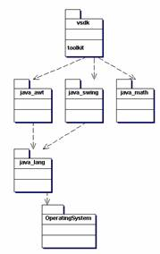
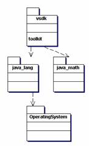
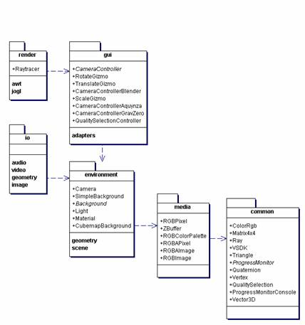
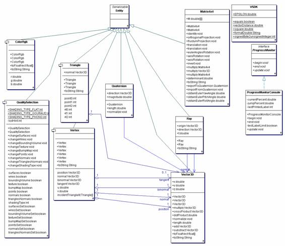
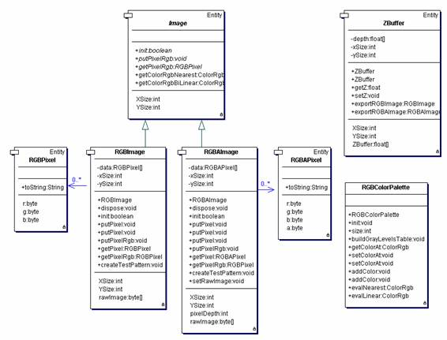
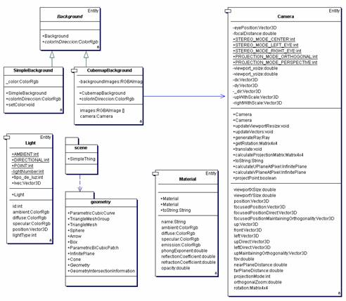
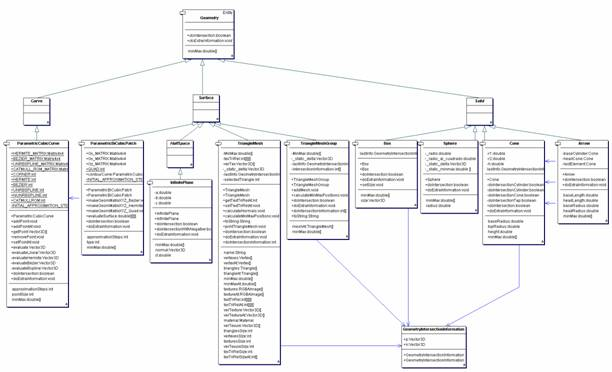

VSDK
– Vitral Software Development Kit
TOOLKIT
LEVEL - Architecture and Design Document
Document
History
|
Date |
Autor(s) |
Comments |
|
February
16 2006 |
Oscar Chavarro |
Preliminary
version |
|
April 29
2006 |
Oscar Chavarro |
Update |
|
|
|
|
|
|
|
|
The “Vitral Software Development Kit” (VSDK) toolkit is a
software product, part of the computer graphics testbed
of the computer graphics laboratory/research group “Takina”,
of the Pontificia Universidad Javeriana
(PUJ) at Bogotá
The VSDK
toolkit is build on top of Java because this is the most popular programming
language in the PUJ engineering faculty, so local community will accept it
easily. This toolkit is intended to constitute the common development platform
for all computer graphics teaching and research activities inside the group,
and perhaps to be considered as a programming alternative outside this scope,
for the developing of computer graphics applications.
The
detected advantages of the VSDK toolkit as compared with current existing
similar alternatives as SDL, vrjuggler, Avocado,
Crystal Space and others, are the following:
It must be
noted that the VSDK is made up of two main pieces: this toolkit and a higher
level of abstraction framework. The
framework is currently an experimental set of ideas and proposals, build on top
of these toolkit that integrates the toolkit in a distributed computing
environment, but it is outside the scope of this document.
Note that
applications could be written on top of the VSDK toolkit, or on top of its
framework, following in that way the full VSDK architecture specification.
Inside the VSDK toolkit distribution, however, only toolkit level applications
are maintained.
The VSDK toolkit
is distributed in the form of two compressed files: VSDK_<dateversion>.tar.gz and
VSDK_DATA_<dateversion>.tar.gz.
The distribution follows a de-facto POSIX organization, with the following
directory names:
· _ide: the toolkit is independent of the IDE used,
so all the IDE-specific files are enclosed inside this directory. There is a
sub-directory for each IDE tool, like “Together” or “Jbuilder”.
The IDE tools must be configured to put all its data inside this directory, and
do no touch in any way the other directories. Most of the files here are
temporary, which means that are not necessary for the software distribution,
but only for the particular IDEs. This implies that
in the distribution, it is common to found most files deleted, and only the
main project definition files for each IDE is always
kept.
· classes: this directory is meant to contain the
compiled java modules (.class files). In the case of the main toolkit library,
this directory is temporary, and its contents can be deleted at any time
without affecting the distribution.
· doc: this directory contains the usual files found
on “doc”, “html” and “man” directories in UNIX systems. This document, other
toolkit related documents, development logs (Personal Software Process
documents), standards, guides, bug tracks, diagrams and APIs are found inside
this directory. None of these files
should be deleted, as they form an integral part of the toolkit. Note that this directory also contains
“source code” specs for automatic documentation generation tools like doxygen [DOXYGEN],
and current results of it. In the case
of automatically generated documentation, the files could be deleted, but
usually, the last version is kept.
· etc: this directory contains the usual files found
on “etc”, “shared” and “data” directories in UNIX systems, which means
configuration files and data files. The directory is organized in
subdirectories for each data type. Note
that this is the bigger directory in terms of data storage size, and it is
distributed broken in two distribution files. In the main VSDK compressed file
are only available the smaller data files, intended for quick testsuite use. In
the VSDK-DATA are distributed the larger files, intended for practical use on
applications, benchmarking-type examples and specific techniques tests that
uses massive information, as terrain rendering.
· lib: this is the directory meant to contain the
VSDK .jar files, or java library files.
Its contents could be deleted in a source-only distribution, but usually
contains the current toolkit version libraries compiled in.
· src: this is the directory where the
source code for the toolkit implementation lies. It is organized in a sub-directory structure
related to packages / class categories, as mentioned later in this document.
· testsuite: this directory contains small
programs, written using the VSDK toolkit. They are in nature catalogued in 4
groups: “Hello world” examples for underlying technologies, VSDK code examples,
computer graphics techniques written using VSDK and sample VSDK functional
applications. The first group of programs are identified by names with a preceding
“_” (underscore) character. The other group of programs are
identified by name due to a postfix of its type (for example, a
Cohen-Sutherland line clipping technique example is in a directory called “CohenSutherlandClippingTechnique”). All of the
subdirectories in the testsuite directory contains a
program with this standard name identification, and a sub-structure of
directories similar to the one of the main VSDK distribution, in other words,
all this directories contains sub-directories like “src”,
“classes” and so on.
The toolkit
depends on some underlying systems, that must be
installed prior to the installation or compilation of the VSDK. These pre-requisite systems can be necessary,
recommended or optional as follows:
This ideas
are expressed graphically in the UML package diagram shown in figure 1. Note that the toolkit
can have various types of builds, depending of the underlying available
pre-requisites. In the absence of IDE
tools, there are always a set of scripts, supplied in DOS/Windows batch files
(.bat) and Unix BASH shell scripts (.sh). All the user needs to testdrive
the VSDK toolkit is to execute those scripts, usually the ones for compiling
first, following for the ones for running.
  
(a) (b) (c)
Figure 1. VSDK
toolkit underlying packages dependencies. (a) VSDK toolkit dependencies
for a platform in which JOGL is available, and Java implementation is complete.
(b) VSDK toolkit dependencies in a platform configuration without JOGL, but
with a complete java implementation. (c) Minimal VSDK dependencies: a JVM
profile with java lang and
java math packages.
As the VSDK
toolkit can be configured to use or not a changing set of pre-requisites,
different compilation scripts are provided for the main library build. The way
in which this modularity is accomplished is by encapsulating the use of
underlying systems inside specific VSDK toolkit packages. For example, only the vsdk.toolkit.render.jogl
package depends on JOGL, so when JOGL is not available or enabled, all that
must be done is compiling all the toolkit except this
packages. Note that current version of
the VSDK toolkit does not depend on swing, but only on awt
(in the packages render.awt and gui).
This
situation could be different at the testsuite
level. The testsuite
programs may need JOGL and/or Swing, or other underlying systems like JMF, but
these are only needed for specific examples. Some of the examples and
applications provided in testsuite can be executed
using the minimal VSDK toolkit configuration.
As part of
the object oriented development environment in which the VSDK toolkit is built,
there are some design and architectural patterns used. Other organization
standards are proposed for the implementation details and coding, and these
decisions affect most practical aspects in the use of the toolkit. So, as
important as these are, they are briefly cover here,
so the toolkit user can form an idea of the VSDK “spirit”.
The first
great design consideration taken for the organization of the toolkit, is to
adapt easily to a Model View Controller schema, thus defining 3 sets of
packages:
The
Composite pattern as presentend in [GAMMA] is commonly used
for implementation of tree-like structures, as in the case of constructive
solid geometry.
The classes inside the render packages are static, and contains
methods that receives as parameter elements of the model and renders it to
build a bigger rendering pipeline in a modularized way. They have in common a
read-only access to the model, but a high level of coupling. They need to know
most of the internal state of the model class in order to render it.
TODO: name this pattern.
All of the
classes in the model packages implements a reflection
or introspection mechanism which allows a higher level system to query
information about its operations and information, and to query and update its
internal values. This forms the way in which presentation systems can access
the model in a generalized way, and eases the implementation of some forms of
persistence and network distribution and control.
TODO: explain more.
As the
complex model of a computer graphics application is broken in several smaller
pieces, some of them inside this VSDK toolkit model, common operations like
persistence, presentation (i.e. GUI manipulation and control) and rendering /
visualization could be broken in a similar fashion, leading to a set of object
that together could respond to a request.
This delegation schema is presented in [GAMMA] as a “chain of responsibility”. In particular, three set of classes are
designed to form a part of chains of responsibilities:
TODO: Explain more and/or exemplify
The VSDK
toolkit is organized in packages, which depends on each other as shown in figure 2. The environment, media
and common packages contains the basic data structures used by the toolkit to
construct virtual environments. The io,
render and gui packages contains utility algorithms to help in
building complete usuful applications. Here is a brief description of what is
contained in each of these packages:

Figure 2. Toolkit packages
dependency relations.
In the
following sections, a detailed description of each package will be presented.
The common
package classes have four main uses:

Figure 3. The vsdk.toolkit.common
package classes.
This is the
only package of the VSDK where classes with public attributes are allowed. Note
that these classes must be considered as simple “structures” (like in C/C++),
more than complete “classes” (as in strict object oriented theory). The reason
for making attributes public is that these classes are so fundamental and
commonly used, that the access to its attributes is usually much repeated,
making a key part of efficient implementation of algorithms. Another valid
argument to defend the existances of public
attributes is that these are very simple entities, so they will not evolve and
will not change its internal representation in the future. For example, a matrix is a matrix, period. It is not bad to have its double
2-dimensional vector exposed, will never change.
The Entity
class provides the Serializable interface to all of the VSDK toolkit classes that extends Entity. Note that all the sub-classes of Entity are
part of the data model in the VSDK toolkit.
The media
package contains the model part and basic operations of common multimedia
content like image, video and sound. Note that there is not any persistence or
rendering code here. These models only
have the minimum necessary for making computer graphics algorithm work in main
memory, at the very common level. The
most typical of these classes is the Image one. Note that images are in the heart of computer
graphics. They are the result of
visualization processes, they are used as textures, they
are analyzed in artificial vision or image processing, and are the center, in
some way, of all the current raster technologies. From an image, one can manage
display hardware, one can print it, send it over the
net as part of a distributed algorithm and so on. These are the kind of classes
included in this package. Note that the
persistence and rendering are located in the io and render packages respectively.

Figure 4. The vsdk.toolkit.media
package classes currently implemented.
Note that
in the current implementation of image models, the low cohesion alternative was
chosen. That is that there is not a
single complex image class representing all cases of color space alternatives, number
of channels or precision. All classes for image representation have a single
internal image format, based on its own pixel format class. The classes must
define the abstract methods of the Image superclass,
and with it will be conformant to various algorithms which uses images, like
textured raytracing. Each classes
defines a standard putPixel/getPixel methods for the
RGB case, and additionally defines its own versions of putPixel/getPixel
methods for its specific pixel formats. Note that the pixel and color classes
are responsible of color model conversions, and image classes can define
alternative putPixel/getPixel formats depending of
the color spaces.
The ZBuffer
class (DepthMap?)
can be used as a depthmap in ZBuffer
like algorithms, as a light buffer / light maps for multipass
pixel-space shadow generation algorithms and it is very basic to most computer
graphics techniques.
The palette
classes are also common for computer graphics techniques, like color
interpolation and scientific visualization.
The
environment package and its sub-packages are the fundamental and central classes that constitutes the VSDK toolkit core geometric
model. There are 5 groups of classes
inside this packages:
The 5 group
of classes in those packages are used to model virtual reality worlds in main
memory. In current implementation this elements are not thread-safe, neither
re-entrant. This implies that Threads should not be used in distributed
implementation, but heavy process should be used instead. These classes are based
upon the functionalities of the common and media packages, and inherits from
the Entity class.
As current
implementation version, Cameras, Lights and Materials are simple classes, and
there is a hierarchy of Backgrounds. The most complex functionality of this
package is the geometric representation of objects (which are preferred to be
called “Things”, for not confusing them with object-oriented programming
terms). The geometries are grouped in a
separate sub-package called geometry.
Note that the Geometry class defines some basic operations common in its
sub-classes, as the doIntersection method.

Figure 5. The vsdk.toolkit.enviroment
package classes currently implemented.

Figure 6. The vsdk.toolkit.geometry
sub-package classes currently implemented.
The classes
located under some sub-package of the io
package are classes that implements operations of persistence. The public
methods of these classes are static, so this classes
usually do not need to be instantiated. The methods usually receive as
parameters a reference to an Entity (a modeling class) and some other parameter
to identify the source or target for data storage.
This is an
experimental package, and its name and/or location could change.
The render
package contains static classes that receives as parameters references to model
objects, and perform rendering operations on it. Usually, these rendering operations are
partial, so the complete rendering pipeline should be implemented in a higher
level, using these algorithms as part of a chain of responsibility.
[DOXYGEN]
[GAMMA]